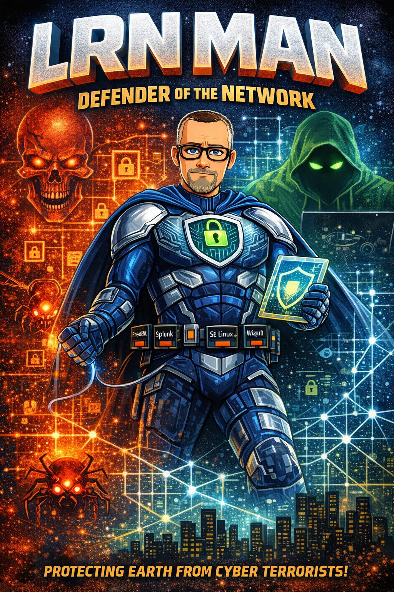

© Mike Anderson. All rights reserved. All cybersecurity tools referenced in this publication are real, publicly available software. Tool names are trademarks of their respective owners. This is an independent educational publication.
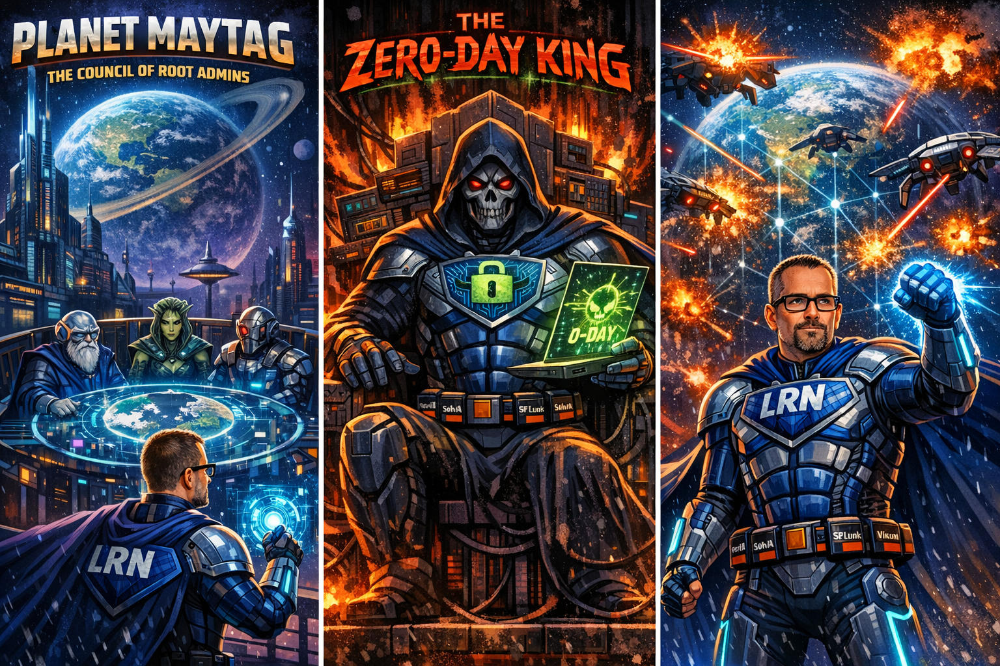
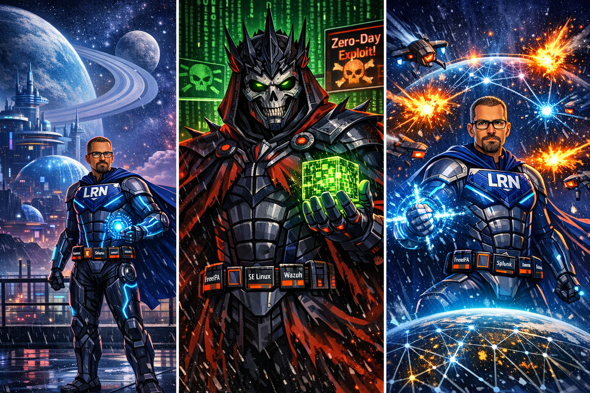
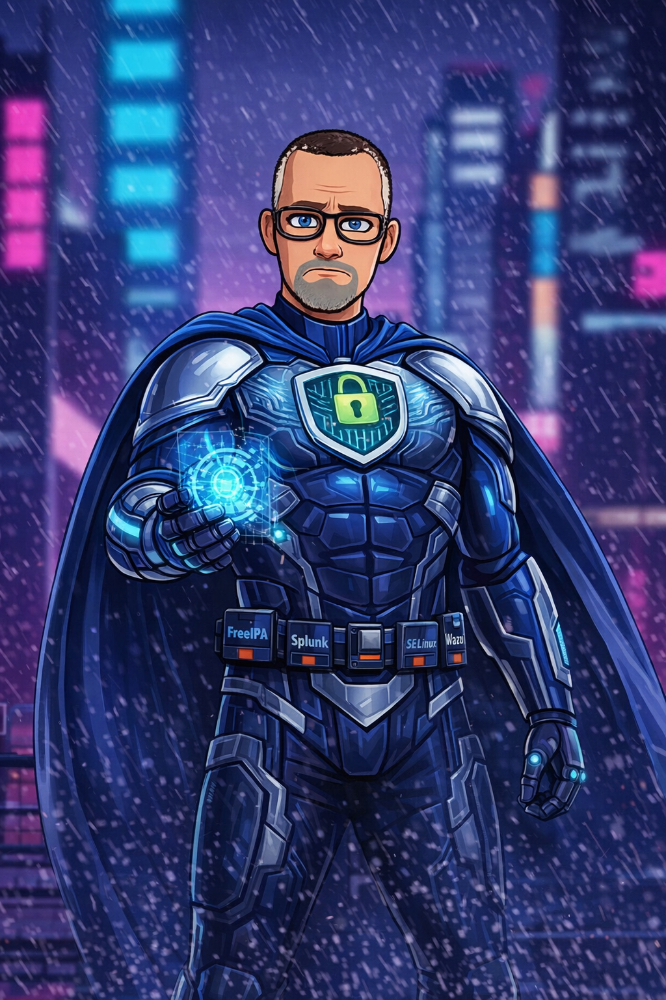
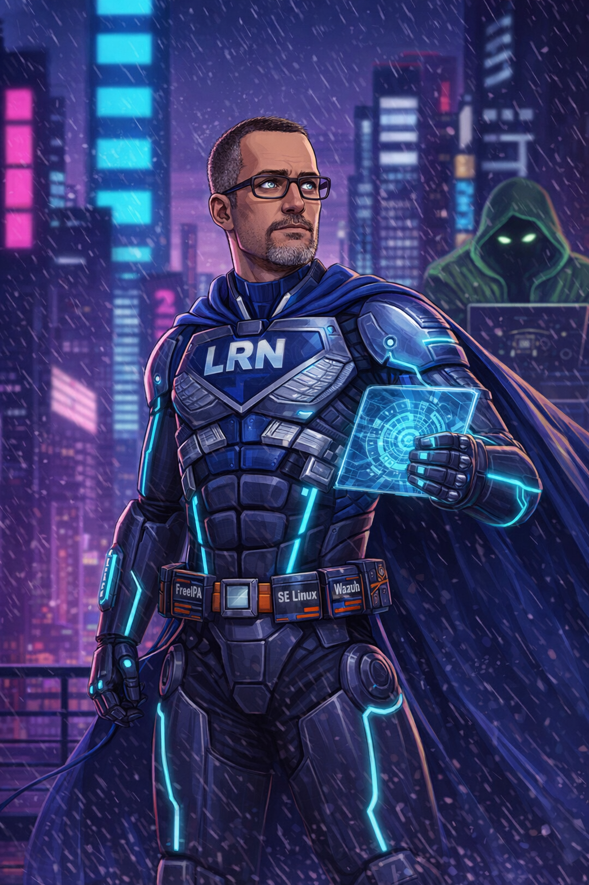
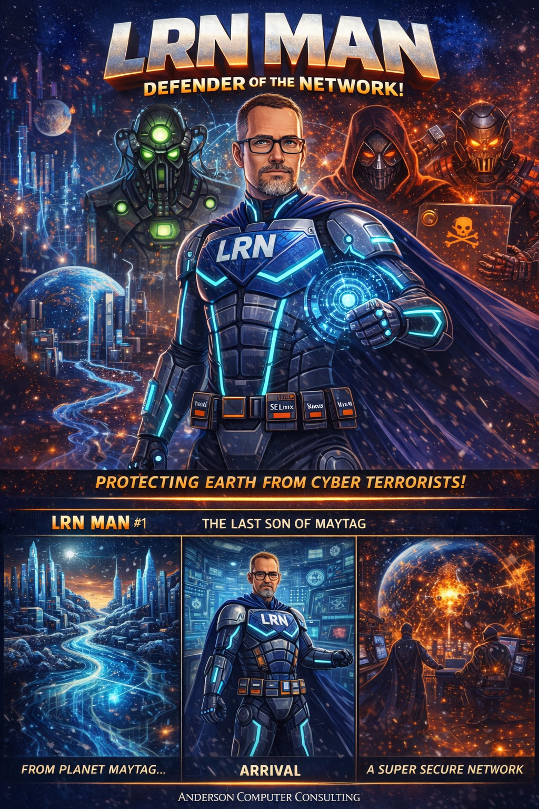
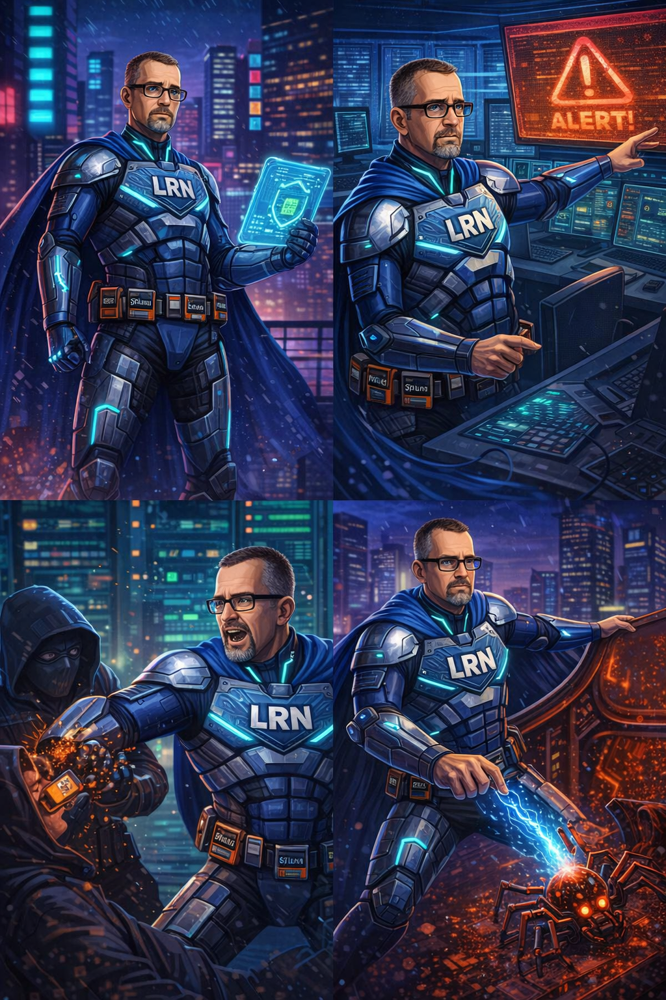
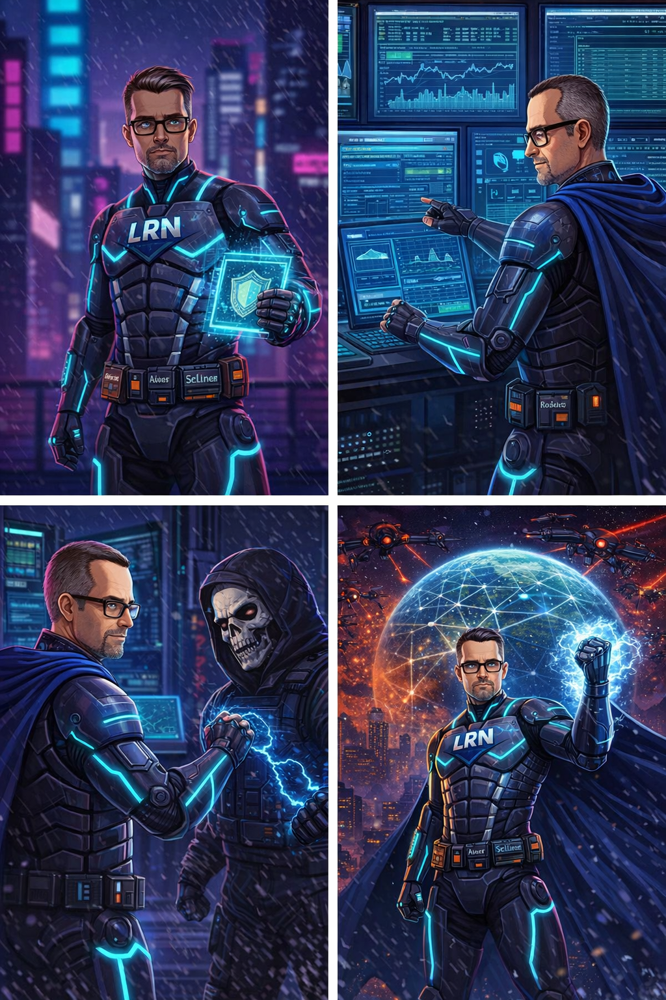
Centralized identity management, policy enforcement, and authentication. Every user, every machine, every service — all verified through a single source of truth. The cornerstone of the network fortress.
The three-headed guardian of authentication. Ticket-granting tickets, session keys, mutual verification. No one accesses this network without proving exactly who they are.
LRN Man's own Certificate Authority. X.509 certificates for every server, every service, every user. No unsigned connections. No untrusted handshakes. Every bit of data wrapped in cryptographic proof.
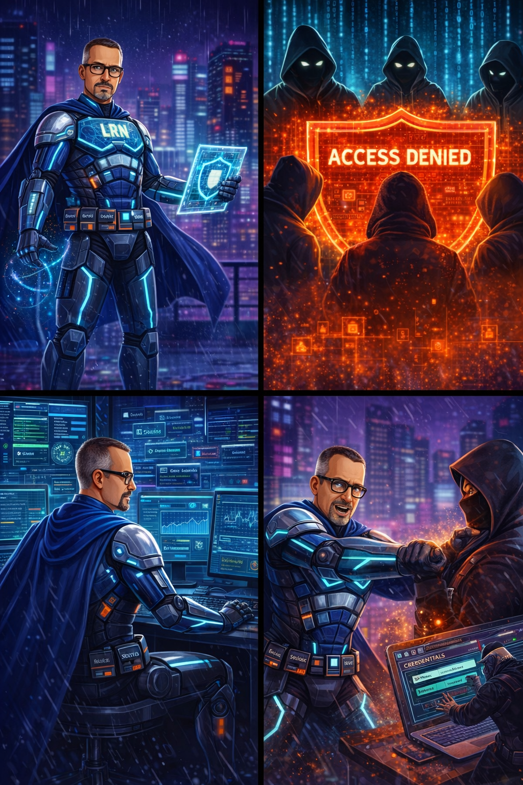
Every process confined. Every file labeled. Every action checked against policy. Even if an attacker gets in, they can't move. They can't escalate. They can't breathe. SET TO ENFORCING. No exceptions. No compromises.
Every log, every event, every anomaly from every system aggregated, correlated, and analyzed in real time. Custom dashboards, alerting rules, and machine learning models that spot threats humans would miss.
File integrity monitoring, rootkit detection, compliance checking, and active response on every endpoint. Every server has a guardian standing watch.
Every admin credential, every service account, every root password — rotated, vaulted, audited, and session-recorded. No one touches a privileged account without going through the vault.
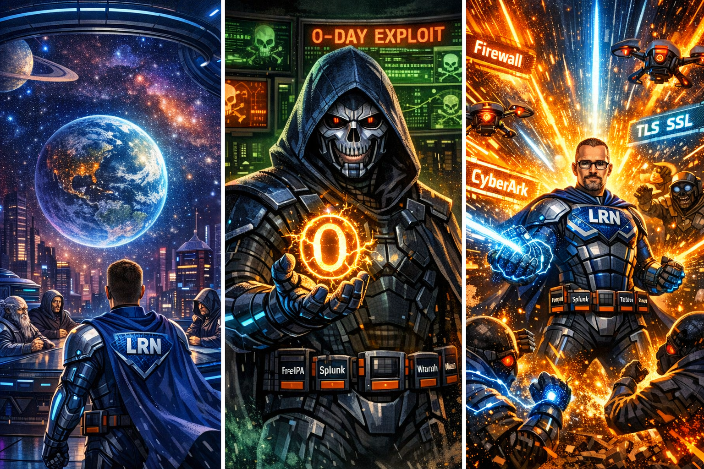
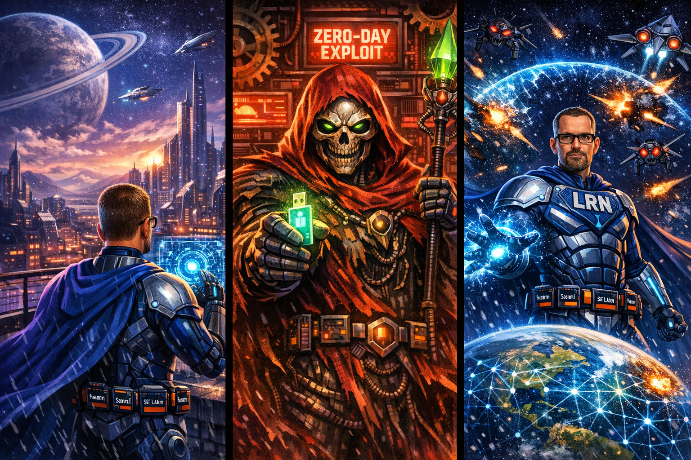
Every configuration file, every automation playbook, every security policy version-controlled. Peer-reviewed. CI/CD pipelines that deploy hardened configurations across the entire network in seconds.
LRN Man's AI co-processor. Threat intelligence feeds, automated baseline enforcement, and predictive analytics. It learns. It adapts. It never sleeps.
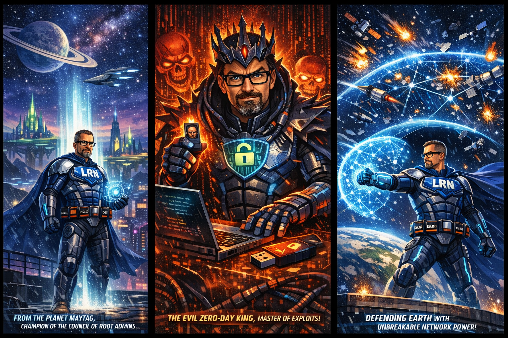

In the days that followed, the world began to notice. Networks that once bled data now stood firm. Systems that once fell to script kiddies now repelled nation-state attacks. And somewhere beneath the city, a defender from another world watched over it all.
He is the last son of Maytag. The architect of the unbreakable network. The guardian who never sleeps, never rests, and never lets a single malicious packet pass unchallenged.
CLEARANCE LEVEL: ROOT · CLASSIFICATION: MAYTAG COUNCIL EYES ONLY · 23 TOOLS
| # | Tool | Category | Function |
|---|---|---|---|
| 1 | Wireshark | Network Analysis | Packet capture and protocol inspection in real-time |
| 2 | Splunk | SIEM | Log aggregation, correlation, and real-time threat analytics |
| 3 | Nmap | Network Scanning | Network discovery, host identification, and port scanning |
| 4 | pfSense | Firewall | Open-source enterprise firewall and router platform |
| 5 | Snort | IDS/IPS | Real-time intrusion detection and prevention system |
| 6 | Suricata | Network Security | High-performance multi-threaded network IDS/IPS |
| 7 | Zeek (Bro) | Network Analysis | Behavioral network analysis beyond signature detection |
| 8 | CrowdStrike Falcon | EDR | AI-driven endpoint detection and response |
| 9 | SELinux | Access Control | Mandatory access control enforcement at kernel level |
| 10 | DNSSEC | DNS Security | Cryptographic DNS authentication to prevent spoofing |
| 11 | Let's Encrypt / TLS | Encryption | Free certificate authority and encrypted data in transit |
| 12 | OSSEC | HIDS | Host-based intrusion detection, log analysis, file integrity |
| 13 | YARA | Malware Analysis | Pattern matching for malware identification and classification |
| 14 | NetFlow / sFlow | Traffic Monitoring | Network traffic flow monitoring — reveals covert exfiltration |
| 15 | OpenVPN | VPN | Open-source VPN creating encrypted tunnels |
| 16 | Metasploit | Penetration Testing | World's most-used penetration testing framework |
| 17 | Burp Suite | Web App Security | Web application security testing and HTTP analysis |
| 18 | Kali Linux | Pentesting OS | Penetration tester's OS with hundreds of pre-loaded tools |
| 19 | Hashcat | Password Recovery | GPU-accelerated password recovery — billions of hashes/second |
| 20 | OpenVAS | Vulnerability Scanning | Full-featured vulnerability assessment and scanning |
| 21 | Fail2Ban | Intrusion Prevention | Automated IP banning based on failed authentication attempts |
| 22 | ClamAV | Antivirus | Open-source antivirus detecting trojans, viruses, and malware |
| 23 | ELK Stack | Log Management | Elasticsearch, Logstash, Kibana — unified battlefield display |
| Villain | Status | Threat | Specialty |
|---|---|---|---|
| Zero-Day King | IMPRISONED | OMEGA | Zero-day exploit discovery and weaponization |
| Shadow Broker | IMPRISONED | ALPHA | Data theft, exfiltration, and black market sales |
| Phantom Packet | DECOMMISSIONED | BETA | Network invisibility and firewall evasion |
| Rootkit Wraith | CONTAINED | ALPHA | Deep system infiltration, kernel-level persistence |
| DNS Poisoner | NEUTRALIZED | BETA | DNS cache poisoning and traffic redirection |
| The Sniffer | IMPRISONED | GAMMA | Traffic interception and unencrypted eavesdropping |